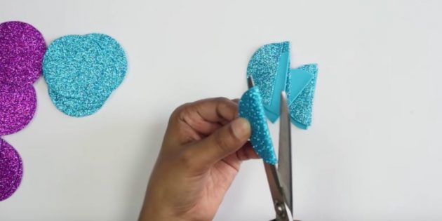
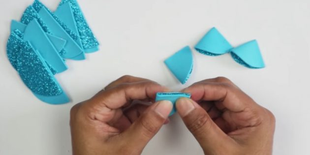
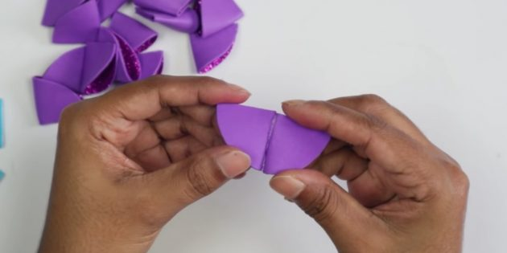
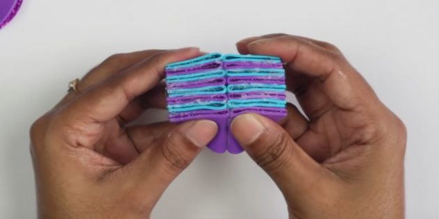
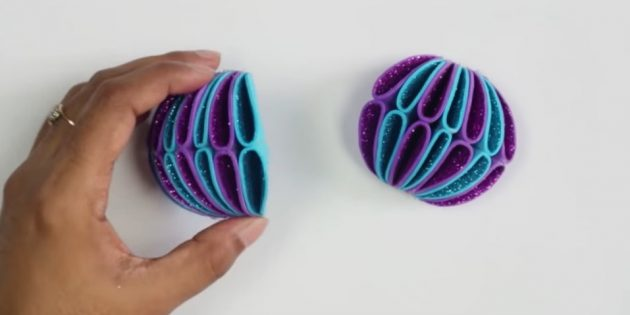
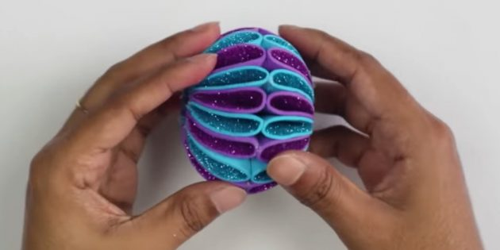
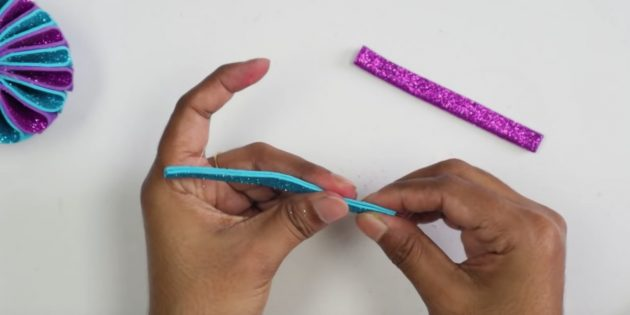
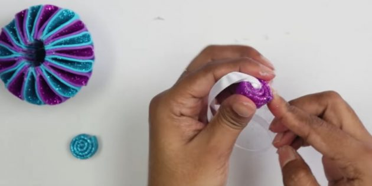
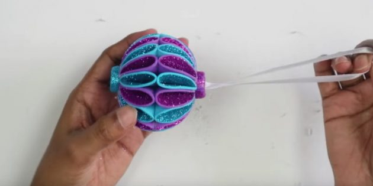

| Глиттерный фоамиран двух разных цветов | 60 руб. |
| карандаш | 6 руб. |
| ножницы | 135 руб. |
| клей‑пистолет | 450 руб. |
| клеевые палочки | 120 руб. |
| ленточка | 4 руб. |
| набор бусин | 160 руб. |
Шаг 1
Вырежьте из фоамирана каждого цвета по восемь небольших кружочков. Чтобы они получились ровными, возьмите какую‑нибудь крышку и надавите её на материал с обратной стороны или обведите карандашом.Сложите каждый кружочек пополам и разрежьте по сгибу.

Шаг 2Затем каждую деталь сложите пополам глиттерной стороной внутрь. Проклейте изнутри с прямой стороны.

Шаг 3Теперь соедините по два треугольничка одинакового цвета. Склеивать их нужно теми местами, на которых находятся сгибы. Всего у вас получится по восемь заготовок каждого цвета.

Шаг 4Смажьте клеем прямую сторону одной детали и прикрепите к ней элемент другого цвета. Присоедините ещё шесть фигур, чередуя цвета. Крайние должны быть разными.

Шаг 5Сделайте ещё одну такую же деталь. Слегка расправьте обе с глиттерной стороны.

Шаг 6Склейте заготовки вместе, соединяя цветные детальки так же, как в предыдущем шаге. Сверху и снизу проклейте те места, где проглядывает обратная сторона фоамирана. Подробный процесс есть в видео ниже.

Шаг 7Вырежьте из фоамирана каждого цвета две небольшие полоски. Склейте каждую вдоль пополам.

Шаг 8Скрутите одну полоску, смазывая её для надёжности клеем. К краю второй полоски прикрепите петельку из ленты и тоже сформируйте проклеенную «улитку».

Шаг 9Промажьте клеем изнутри отверстия на шарике. Вставьте туда подготовленные детальки. Они должны выпирать наружу примерно наполовину. В отверстия между нижней и верхней частями шарика вклейте бусины.
